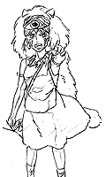
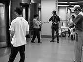
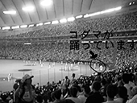
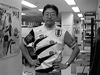

ジブリ野球部のメンバーです

制作日誌 1997年7月
97.7.1（火）
スーパーマンの最終話の作画打会わせが始まる。もちろん40話の作業は続行中。
「ジブリがいっぱい」第1弾「となりのトトロ」に関する問い合わせがかなりくる。その多くは「裏面の髪を両脇で結わえた女の子はメイですか? サツキですか?」というもの。
97.7.2（水）
原画2人が「スーパーマン」最終話の作打ちを行う。
昼食時、ふと寄ったレコード屋でジブリ関連のキャンペーンをはっているのに出くわす。まだ「もののけ姫」のTVスポットも見ていない身としては何だか背中がかゆくなる。
＜イムラ＞さあ、バトンは再び田中さんへ、GO!!
97.7.3（木）
復活していきなり「東京ドーム「もののけ姫」ナイター巨人VSヤクルト戦」で東宝、メイジャーのスタッフと共に団扇とちらし配り。外の気温が35度近くになったため、お客さんに団扇が大変喜ばれる。他にジブリからも奥井さんや百瀬さんなど10人以上が参加。もちろんそのほとんどが巨人ファンである。試合は勿論巨人の楽勝。


高畑監督が、社内のスタッフに、小学校と中学校の時に給食だったか弁当だったかのアンケートを始める。
キャンペーン中の宮崎監督から、「秋田ではテレビで「ツール・ド・フランス」やってないから録画しといて」との命が下る。
97.7.16（水）
石井氏が、デジタルペイントの社内用マニュアルを作成し、コピーしているところをちらりと覗く。1頁目の第一章に絵付きで「モニターとタブレットとコンピュータの電源を入れる」とある。やっぱりそこから書かなきゃだめなのね…。
高畑監督がなぜかお休み。
土日は勿論、平日でも「もののけ姫」を観にかなりの人々が劇場に足を運んでくれているらしい。スタッフは皆けっこうホッとしている。内心コケたらどうしようと心配していたのだ。
97.7.17（木）
群馬のファンから突然お菓子が届けられる。気持ちはとてもありがたいけど、お金がもったないから止めるように。
なんと！コミックボックス「もののけ姫」特集号をもって、才谷、三好両氏が来社。本当に出来上がっている…。いしいひさいち画の鈴木プロデューサーの似顔絵は必見。発売は19日。
米沢さんがスパイ活動の一環として、有楽町の劇場を廻り客の入り具合を視察。平日なのに立ち見になっているらしい。因みに○スト・○ールドは座ってみられるとか（劇場が大きいからしょうがないか）。でもあんまり入りすぎるのも何かありそうで恐いぞ。
97.7.18（金）
ジブリにきた手紙や、ホームページに送られてきたメールをひとまとめにして、二階の卓袱台の上に置いてスタッフに公開。みんな自分達の作った映画の反応を熱心に見ている。
農工大大学院で猿を研究している制作居村氏の妹が来社。美人だったので一部で騒然となる。
吉田君と鈴木まり子嬢が先日ついに結婚。恒例の色紙が社内をまわっている。
97.7.19（土）
キャンペーンから無事帰還した宮崎監督と鈴木プロデューサーが早速出社（社内では「１日位休めばいいのに」の声しきり）。宮崎監督は早くもジブリ若手スタッフを捕まえて、次の企画の話をしている。
今年のツール・ド・フランスがメチャクチャ面白いため、ジブリツール友の会メンバーが急速に増殖中。
97.7.22（火）
野崎氏が宮崎監督に「母をたずねて三千里」のインタビューをするため来社。ところでツール・ド・信州に参加予定の野崎氏だが、事故の後遺症のため左腕が完全に上がらず参加が危ぶまれている。
もう一つツールの話題。一昨日高坂氏が本番に備えて斎藤氏と共に宮崎監督の山小屋に行ってきたそうな。結果は高坂氏が165キロの行程を５時間40分のタイム。斎藤氏もその１時間遅れ。こちとら目標は10時間で完走だっていうのに…。日頃から午前中につくと言っていた言葉は本当だったのか。
高畑監督と鈴木プロデューサーが美術の田中氏、武重氏と話し合いを持つ。次の美術はこの２人で。
高畑監督が某新聞の投書欄を周りのスタッフに見せては、意見を聞いている。
97.7.23（水）
以前いくつかのジブリ作品で原画を担当したT氏が来社。8月後半から高畑監督の次回作にメインスタッフとして参加する予定。
宮崎監督からスウェーデンの画家カール・ラーソンの画集を手に入れよ。との指令が出る。早速吉祥寺のパルコブックセンターに行くも、１冊もなし。何軒かの書店にTELし、結局澁谷のロゴスで入手。
漫画家の柊あおい、長谷川潤、谷川史子の三氏が来社し宮崎監督と歓談。色紙にサインをもらっていた者多数。
97.7.24（木）
4℃の田中さんと松見さんが来社。
ツール・ド・信州のユニフォームがついに完成。宮崎監督が早速社内をまわって見せびらかしている。
明日屋上で、今月で退社する某氏の送別会を兼ねた、北海道人の心のふるさとジンギスカンパーティを開催する予定だが、台風が接近しているというニュースが…。
今日からエヴァンゲリオンの一挙再放送が始まるが、高畑監督が「見なくては」と意欲を見せている。
97.7.25（金）
Dプロジェクトの本田さんが来社。新たな特番の収録。その際本田さんからツール・ド・信州に表彰台（何故か「ガメラ」と書いてある）と垂れ幕（「ツール・ド・たたら」と書いてある）のプレゼントがある。
午後6時すぎから屋上にて送別会を兼ねたジンギスカンパーティを開催。心配された台風も来ず、北海道からベルジンギスカンのたれを取り寄せ、ラムやマトン等7.5キロを用意。ジンギスカン鍋が一つしかないので後は鉄板で代用する。何だかんだで3、40人のスタッフが参加し大盛況となる。
97.7.26（土）
午後3時より「ツール・ド・信州」の参加者説明会及びユニフォームの配布が行われる。怪我人野崎さんも来社する。ようやく昨日5分間だけ自転車に乗ることが出来たという話だが、まだ参加すると豪語している。

職場委員会が行われる。「もののけ姫」の興行状況や次回作等の報告。
97.7.29（火）
宮崎監督の指示で、MITスタジオから歩いて10分程の浅草橋で1ｍ近くある無地の提灯を購入。ツール・ド・信州の際、ゴールである監督の山小屋に飯屋の意味で「黒豚亭」と書いてぶら下げたいとのこと。美術田中氏が文字を書き、提灯全体をブラシでピンクに塗る。
97.7.30（水）
高畑監督が韓国で行われるアニメーションフェスティバル「アニメキスポ97」に参加するため、今日からお休み。
ところでスパイの米沢さんは、数日まえから既に夏休みに入っており、一旦故郷の大阪に帰り、来月３日からは奥さんとイタリア旅行に行くそうな。
宮崎監督は、例の提灯を携えて三輪車で山小屋に出発する予定であったが、雨のため延期。
**米沢さんレポート**
休暇中の米沢さんから、帰省先の京都の劇場の様子がメールで送られてきました。以下にお伝えします。
京都市では、東宝公楽、弥生座という2つの映画館で「もののけ姫」を上映しています。7月30日（水）に両劇場を訪れたのですが、いずれも開場1時間前には長蛇の列。それぞれの劇場の方にお話を伺いました。
東宝公楽 西堀営業課長「初日、朝7時には劇場の前に延々と列ができているのを見て一体何の行列かと...。まさか「もののけ姫」をお待ちのお客様だとは思いませんでした。特に「スーパー情報最前線」（7月28日）放映後は、朝の回からびっしりという状態になりまして、「もののけ姫」のパワーに驚いています。」
弥生座 神田支配人「もう、こんなことは何十年ぶりです。うちはそんなに大きい劇場でもないので、行列がすぐ新京極通に連なってしまって。新京極は商店街ですから、行列がすごく目立つんです。それがまたお客様を呼ぶという状態で...。東宝公楽さんとは上映時間をずらして、お互いにお客様を誘導しているんですが、とても追いつきません。なにより驚いているのは、上映3週間というのに、客足が全然落ちないことですね。もう少しすれば落ち着いてくるとは思うんですが、今のところは、もううれしい悲鳴なんてもんじゃないです。」
京都の暑い夏はまだまだ続きそうです。
| 次のページへ |
| 日誌索引へ戻る |
| 「もののけ姫」トップページへ戻る |